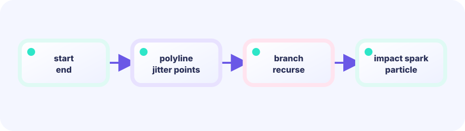

Jagged path
Jitter midpoints randomly.
nx += (rand-0.5)*wobble
★★★★★ / PLAYABLE
Showcase #3. A jagged bolt runs sky-to-hand and sprouts side branches. vector.StrokeLine—not only textures—steals the show.
This lab also sits on the LEVEL 01 boundary between Update (state) and Draw (pixels). Here we dig one layer deeper into projecting the same state through different renderers.
PLAYABLE / LIVE GO + MOUSE
Tap CAST THUNDER (or Space). Cast again to see new branch shapes.
FIRST-TIME READER
Find where this one line is used, then follow how its value changes on screen. This is the shared game-state boundary: add rules in Update, then choose an independent presentation in Draw. The numbered steps below add one system at a time.
ONE RULE TO TRACE
Match the explanation to this line, then test the change in the game.
branch(a, b, depth-1)
DEEP DIVE / THUNDER
Split the main stroke into segments, jitter midpoints, and recursively spawn thinner branches. Layer bolt PNGs and sparks, then white-flash the screen. Three strokes (blue glow → body → white core) sell thickness.
Jitter midpoints randomly.
nx += (rand-0.5)*wobble
Recurse with a depth limit.
addBolt(..., depth+1)
Glow, body, and white core.
StrokeLine × 3 widths
TRY IT / BOLT FLASH
Burst for bolts and sparks. Recursive branching lives in the WASM demo.
Burst to preview the layers
IN THE SHOWCASE
Stack StrokeLine branches and bolt PNGs in the same frame.
func addBolt(x0,y0,x1,y1, depth) {
// jittered segments...
if depth < 2 && rand() < 0.35 {
addBolt(nx,ny, bx,by, depth+1) // branch
}
}
StrokeLine(glow); StrokeLine(body); StrokeLine(core)WHY BRANCH?
Thin side forks read as lightning more than a single line.
WHY FLASH?
Short life + screen flash sells the “instant”.
TRY NEXT
Next: radial flare rays.
FEEDBACK